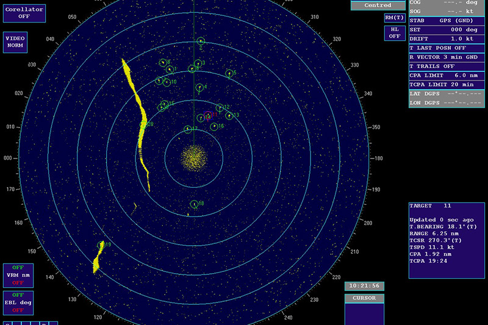
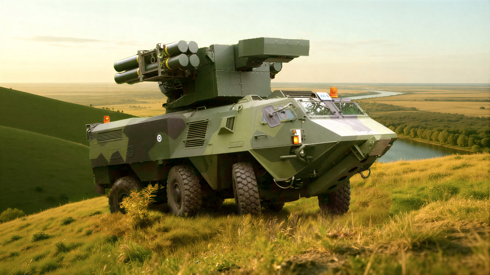
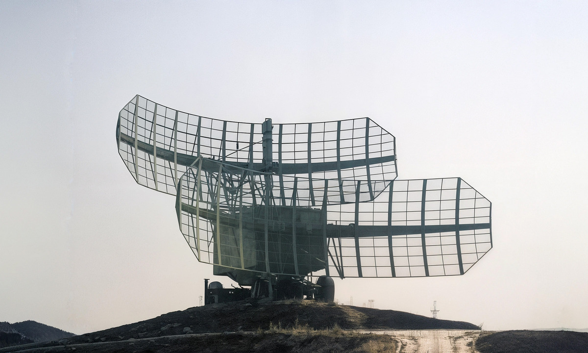
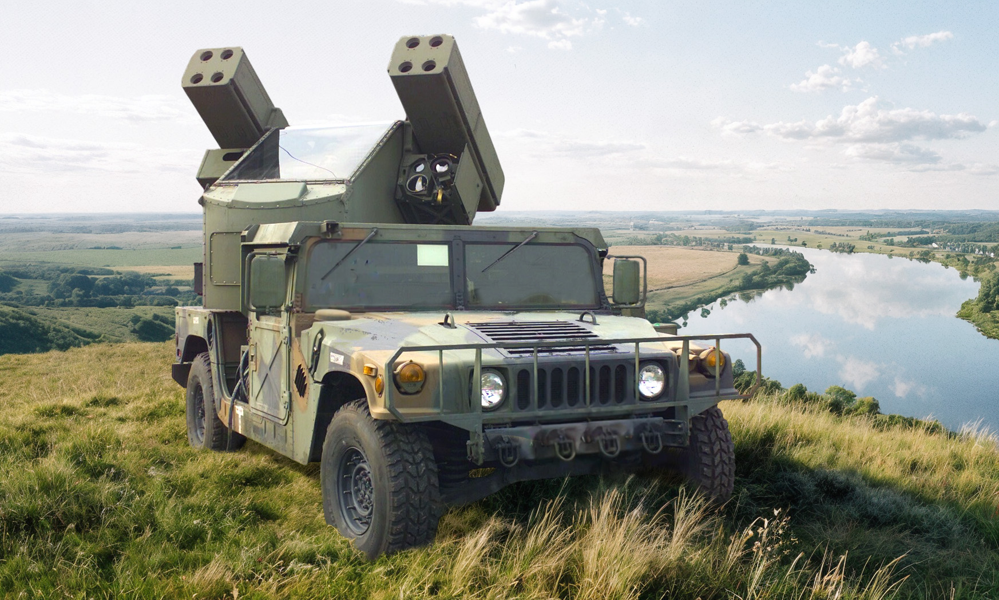
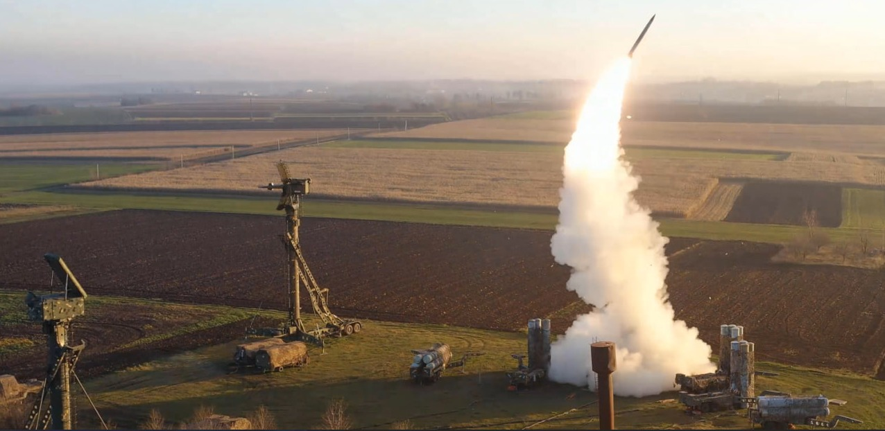
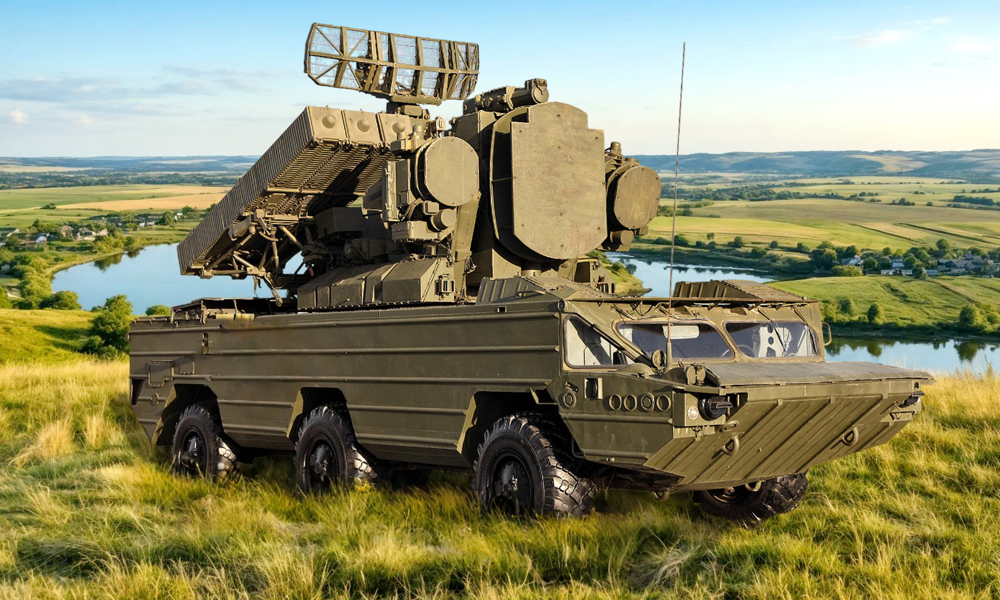

Відділення
підготовки експлуатації радіоелектронних систем та пристроїв

Начальник відділення
підполковник
Сосімович Валентин Володимирович
Сьогодні небо України - це поле битви за незалежність.
На нашому відділенні ми не просто готуємо військових - ми виховуємо майстрів високих технологій, які керують безпекою українського неба.
- «Експлуатація систем та комплексів зенітного озброєння Сухопутних військ»
- «Експлуатація наземних засобів радіоелектронного та інформаційного забезпечення польотів авіації»
- «Експлуатація зенітних ракетних комплексів та систем середньої дальності»
- «Експлуатація радіоелектронних засобів інформаційного забезпечення і управління зенітними ракетними комплексами та системами»
- «Експлуатація радіотехнічних систем та пристроїв засобів радіолокації»
Відділення готує фахівців за спеціальностями:
К6 «Забезпечення військ (сил)»
Спеціалізація - «Комплекси та засоби автоматизації управління автоматизованої системи управління
авіацією та протиповітряною обороною»;
К7 «Озброєння та військова техніка»
Спеціалізації:
Навчання триває 2 роки, після чого курсанти отримують диплом фахового молодшого бакалавра за відповідною спеціальністю.
До складу відділення входять циклові комісії:







Чому навчання у нас - це твій найкращий старт?
- Практика понад усе. Ми відмовилися від «сухої» теорії. Значна частина навчального часу - це робота на реальній техніці, полігонах та спеціалізованих тренажерах. Використання програмних комплексів-симуляторів дозволяє відпрацьовувати бойову роботу до автоматизму в безпечних умовах.
- Сучасна екосистема навчання. Усі наші курсанти мають доступ до системи дистанційного навчання Moodle. Методички, відеоуроки, інтерактивні схеми - усе це доступне у вашому смартфоні 24/7. Ми готуємо фахівців, які вміють вчитись та адаптуватись до нових технологій.
- Повне державне забезпечення. Ми знімаємо всі фінансові питання з плечей курсанта та його родини:
- Безкоштовне навчання (державне замовлення).
- Щомісячне грошове забезпечення (стипендія).
- Безкоштовне проживання у гуртожитку.
- Повний речовий та продовольчий атестат (форма та харчування).
- 100% працевлаштування. Одразу після випуску курсанти отримують гарантоване місце служби в частинах Повітряних Сил чи Сухопутних військ України. Це стабільна робота з високим рівнем соціального захисту.